10 Interaktionseffekte
10.1 Beispieldaten1
| Velocity[m/s] | body mass[kg] | arm span[cm] |
|---|---|---|
| 185.42 | 68.71 | 20.14 |
| 184.08 | 73.85 | 21.29 |
| 200.74 | 89.43 | 27.57 |
| 170.34 | 84.97 | 19.88 |
| 176.89 | 82.40 | 20.51 |
| 200.68 | 91.57 | 29.22 |
10.2 Beispieldaten - Deskriptiv
| Mean | Std.Dev | Min | Max | |
|---|---|---|---|---|
| arm_span | 184.3 | 7.7 | 169.4 | 200.7 |
| body_mass | 77.5 | 10.3 | 58.0 | 101.1 |
| vel | 21.9 | 2.3 | 18.5 | 29.2 |
10.3 Beispieldaten
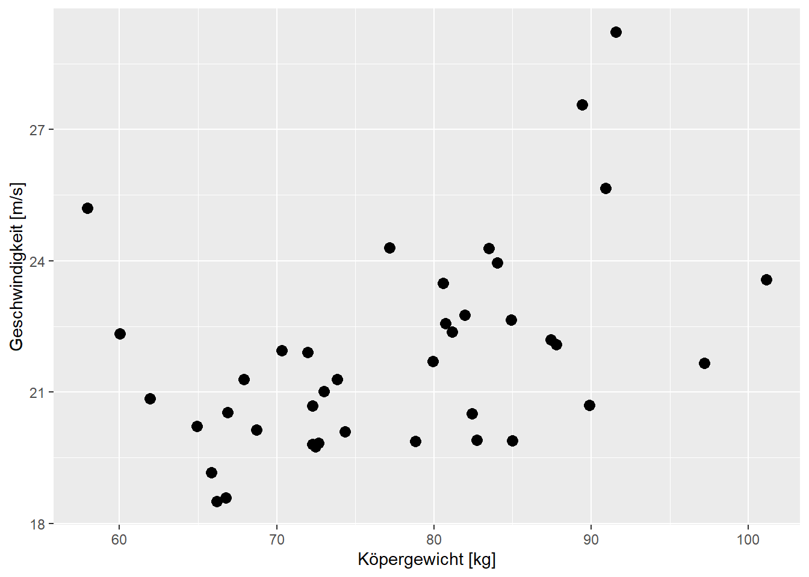
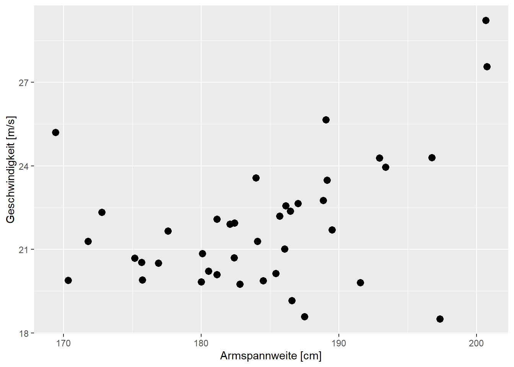
10.4 Beispieldaten - Startmodell
\[ Y_{i} = \beta_0 + \beta_1 \times \textrm{bm}_i + \beta_2 \times \textrm{as}_i + \epsilon_i \]
mod_1 <- lm(vel ~ body_mass + arm_span, handball)| \(\hat{\beta}\) | \(s_e\) | t | p | |
|---|---|---|---|---|
| (Intercept) | -1.768 | 7.632 | -0.232 | 0.818 |
| body_mass | 0.077 | 0.033 | 2.359 | 0.024 |
| arm_span | 0.096 | 0.044 | 2.192 | 0.035 |
| \(\hat{\sigma}\) | 1.996 |
10.5 Modellfit
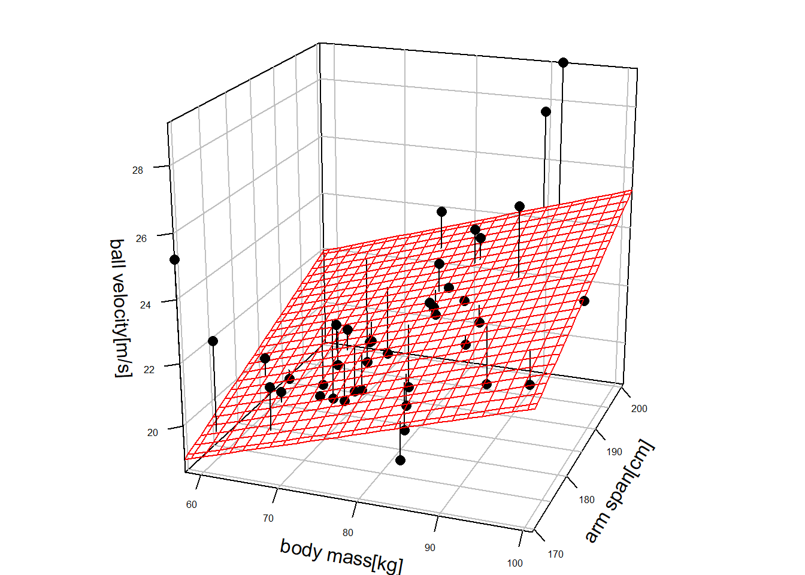
10.6 Zentrierung
handball <- dplyr::mutate(handball,
body_mass_c = body_mass - mean(body_mass),
arm_span_c = arm_span - mean(arm_span))| Mean | Std.Dev | |
|---|---|---|
| arm_span | 184.29 | 7.72 |
| arm_span_c | 0.00 | 7.72 |
| body_mass | 77.46 | 10.26 |
| body_mass_c | 0.00 | 10.26 |
| vel | 21.85 | 2.31 |
10.7 Modell mit zentrierten Variablen
mod_2 <- lm(vel ~ body_mass_c + arm_span_c, handball)| \(\hat{\beta}\) | \(s_e\) | t | p | |
|---|---|---|---|---|
| (Intercept) | 21.852 | 0.316 | 69.247 | <0.001 |
| body_mass_c | 0.077 | 0.033 | 2.359 | 0.024 |
| arm_span_c | 0.096 | 0.044 | 2.192 | 0.035 |
| \(\hat{\sigma}\) | 1.996 |
10.8 Residuen im zentrierten, additiven Modell
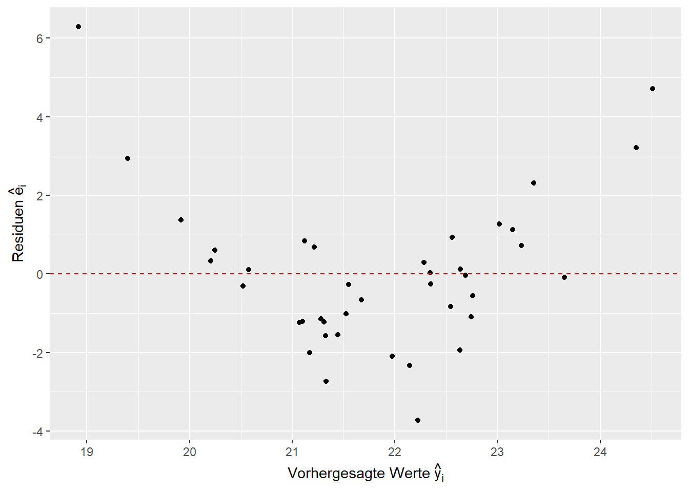
10.9 Added-variable plot
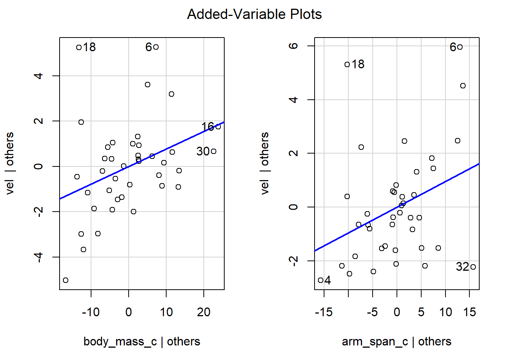
car::avPlots()10.10 Was passiert wenn die Effekte nicht mehr nur additiv sind?
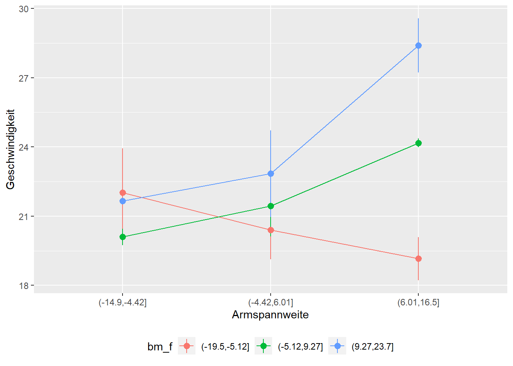
10.11 Was passiert wenn die Effekte nicht mehr nur additiv sind?
10.11.1 Neues Modell mit Interaktionen:
\[ Y_{i} = \beta_0 + \beta_1 \times \textrm{bm}_i + \beta_2 \times \textrm{as}_i + \beta_3 \times \textrm{bm}_i \times \textrm{as}_i + \epsilon_i \]
10.12 Modellierung
mod_3 <- lm(vel ~ body_mass_c * arm_span_c, handball) | \(\hat{\beta}\) | \(s_e\) | t | p | |
|---|---|---|---|---|
| (Intercept) | 21.346 | 0.143 | 149.296 | <0.001 |
| body_mass_c | 0.119 | 0.015 | 8.133 | <0.001 |
| arm_span_c | 0.083 | 0.019 | 4.380 | <0.001 |
| body_mass_c:arm_span_c | 0.021 | 0.002 | 12.633 | <0.001 |
| \(\hat{\sigma}\) | 0.868 |
10.13 Einfache Steigungen in Vergleich
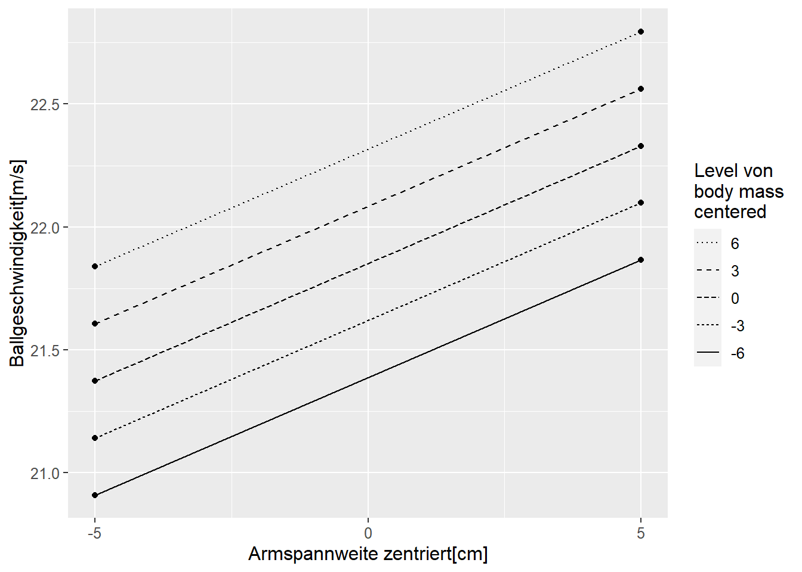
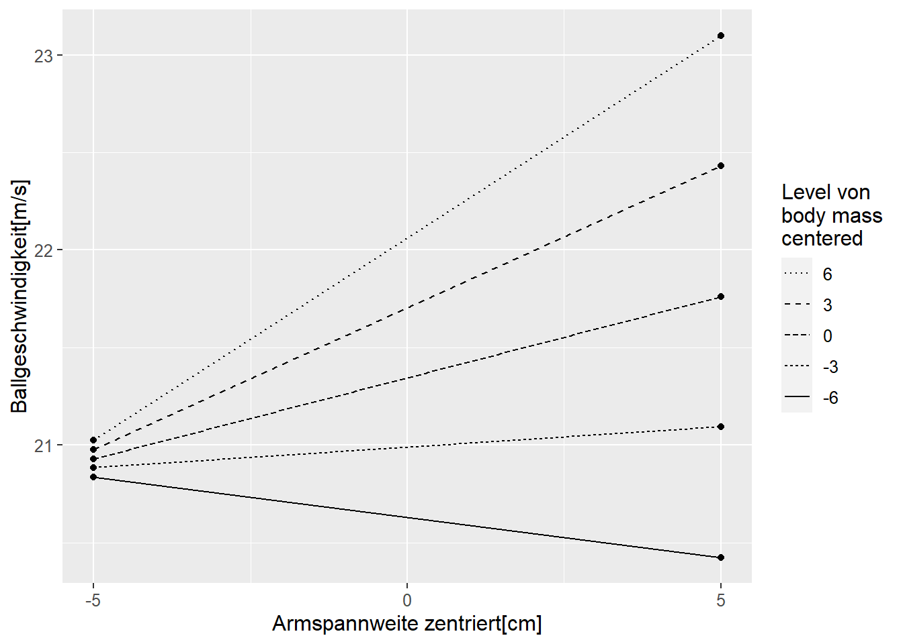
10.14 Interaktionen sind symmetrisch


10.15 Warum das Model Sinn macht
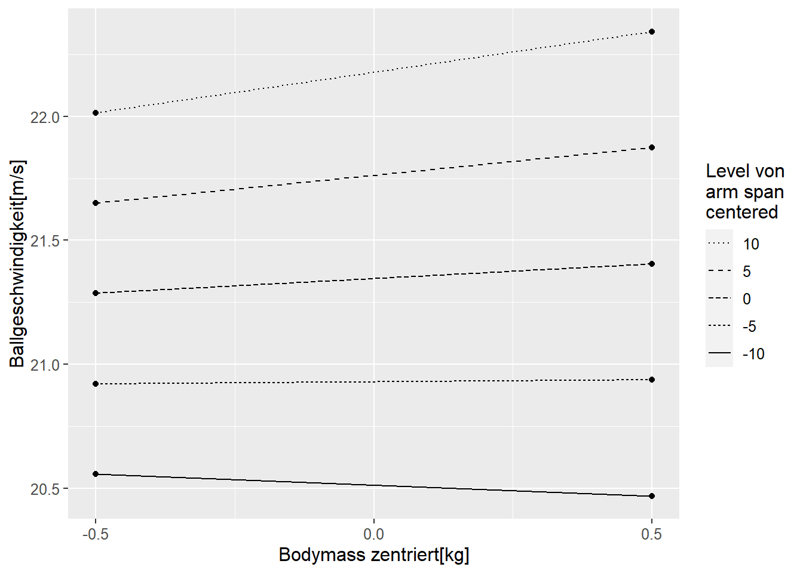
| arm span\centered | \(\beta_0\) | \(\beta_1\) |
|---|---|---|
| 10 | 22.18 | 0.33 |
| 0 | 21.35 | 0.12 |
| -10 | 20.51 | -0.09 |
10.16 Warum das Modell Sinn macht
| arm span\centered | \(\beta_0\) | \(\beta_1\) |
|---|---|---|
| 10 | 22.18 | 0.33 |
| 0 | 21.35 | 0.12 |
| -10 | 20.51 | -0.09 |
| betas | |
|---|---|
| b0 | 21.35 |
| bm_c | 0.12 |
| as_c | 0.08 |
| bm_c:as_c | 0.02 |
10.17 Interpretation der Koeffizienten
\[ Y = b_0 + b_1 \cdot x_1 + b_2 \cdot x_2 + b_3 \cdot x_1 \cdot x_2 + \epsilon_i \]
- \(b_0\): (y-Achsenabschnitt) der Wert von \(\hat{Y}\) wenn \(x_1 = 0\) und \(x_2 = 0\) gilt.
- \(b_1\): Der Unterschied in \(\hat{Y}\) wenn zwei Objekte sich in \(x_1\) um eine Einheit unterscheiden und \(x_2 = 0\) ist.
- \(b_2\): Der Unterschied in \(\hat{Y}\) wenn zwei Objekte sich in \(x_2\) um eine Einheit unterscheiden und \(x_1 = 0\) ist.
- \(b_3\): (Interaktionskoeffizient) Die Veränderung des Effekts von \(x_1\) auf \(\hat{Y}\) wenn \(x_2\) um eine Einheit größer wird bzw. genau andersherum für \(x_2\).
10.18 Aus der Ebene wird eine gekrümmte Fläche
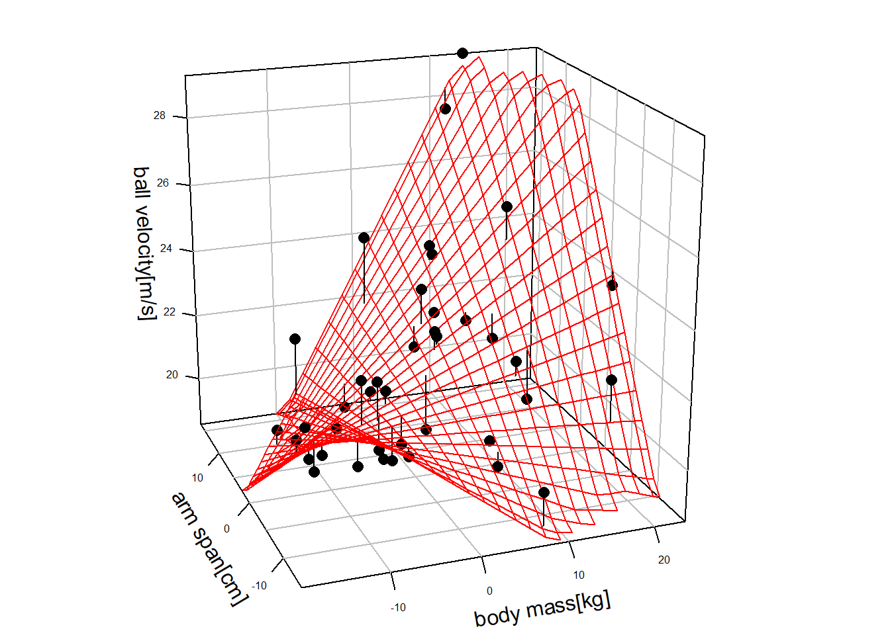
10.19 Residuenvergleich

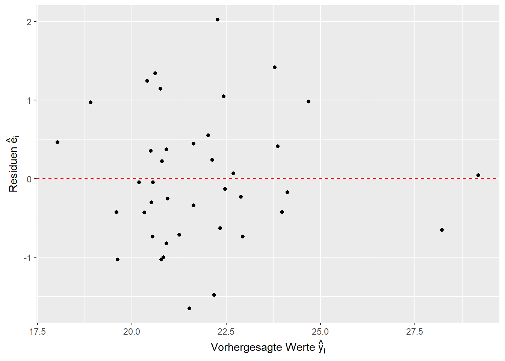
10.20 Residuenvergleich - qq-Plot
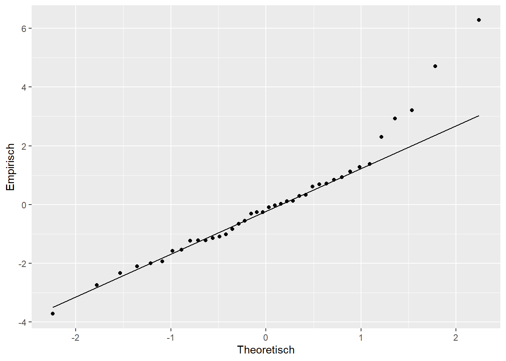
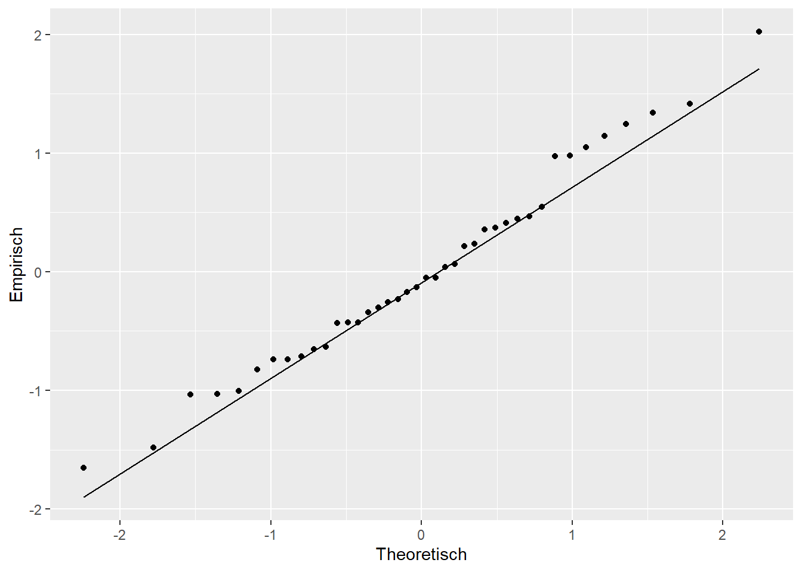
10.21 Take-away
Interaktionsmodell
- Erhöht die Flexibilität des linearen Modells.
- Bei Interaktionen hängt der Einfluss der einzelnen Variablen immer von den Werten der anderen Variablen ab.
- Achtung: Interpretation der einfachen Haupteffekte nicht mehr möglich bzw. sinnvoll!
10.22 Zuschlag
Was passiert im Interaktionsmodell mit den Koeffizienten wenn die \(x_{ki}\)s zentriert werden?
\[\begin{align*} y_i &= \beta_0 + \beta_1 (x_{1i} - \bar{x}_1) + \beta_2 (x_{2i} - \bar{x}_2) + \beta_3 (x_{1i}-\bar{x}_1)(x_{2i}-\bar{x}_2) \\ &= \beta_0 + \beta_1 x_{1i} - \beta_1 \bar{x}_1 + \beta_2 x_{2i} - \beta_2 \bar{x}_2 + \beta_3 x_{1i} x_{2i} - \beta_3 x_{1i} \bar{x}_2 - \beta_3 \bar{x}_1 x_{2i} + \beta_3 \bar{x}_1 \bar{x}_2 \\ &= \beta_0 - \beta_1 \bar{x}_1 - \beta_2 \bar{x}_2 + \beta_3 \bar{x}_1 \bar{x}_2 + \beta_1 x_{1i}- \beta_3 \bar{x}_2 x_{1i} + \beta_2 x_{2i} - \beta_3 \bar{x}_1 x_{2i} + \beta_3 x_{1i} x_{2i} \\ &= \underbrace{\beta_0 - \beta_1 \bar{x}_1 - \beta_2 \bar{x}_2 + \beta_3 \bar{x}_1 \bar{x}_2}_{\beta_0} + \underbrace{(\beta_1 - \beta_3 \bar{x}_2) x_{1i}}_{\beta_1 x_{1i}} + \underbrace{(\beta_2 - \beta_3 \bar{x}_1) x_{2i}}_{\beta_2 x_{2i}} + \beta_3 x_{1i} x_{2i} \end{align*}\]
10.23 Zum Nacharbeiten
Kutner u. a. (2005, p.306–313)